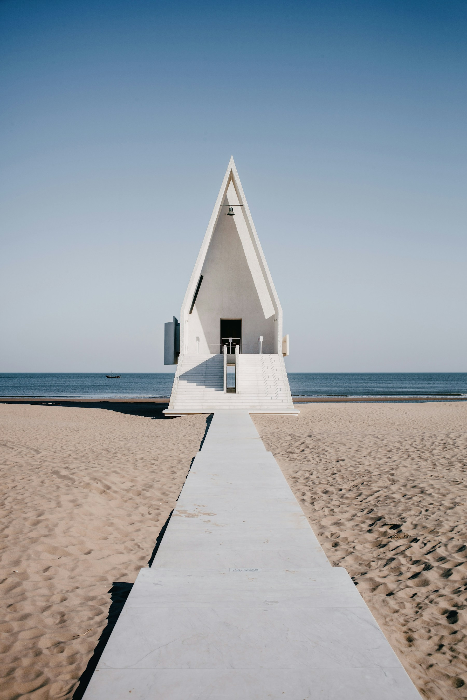
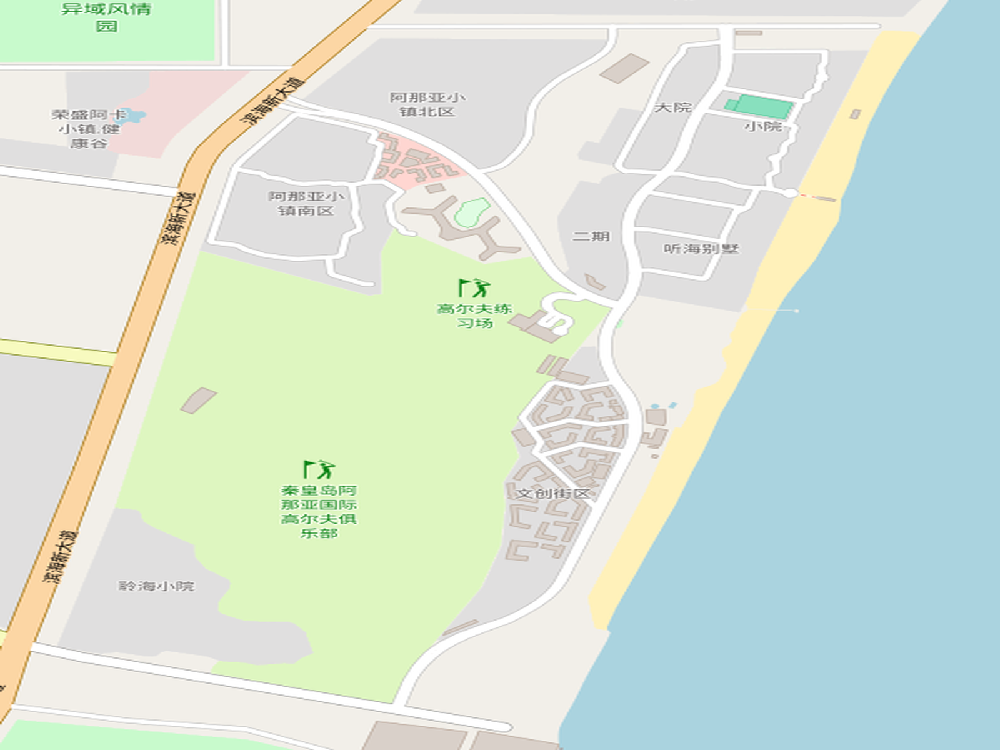
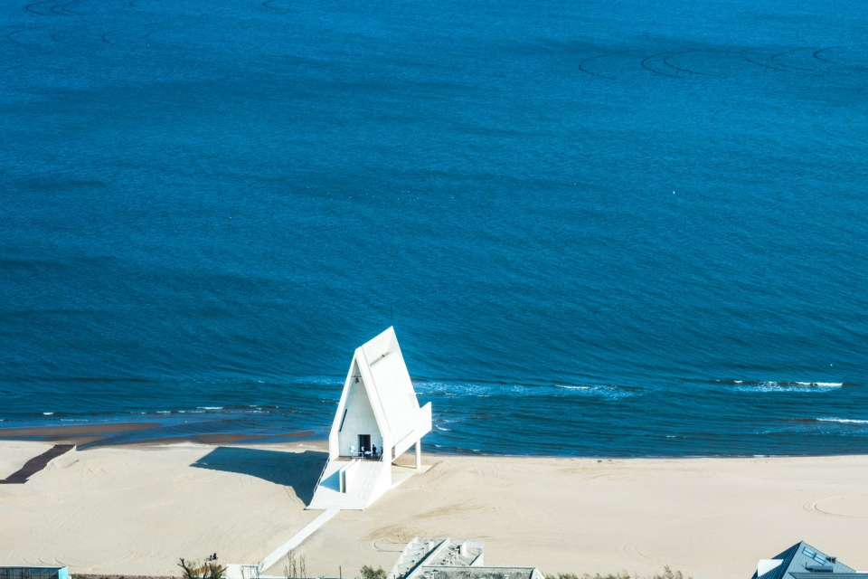
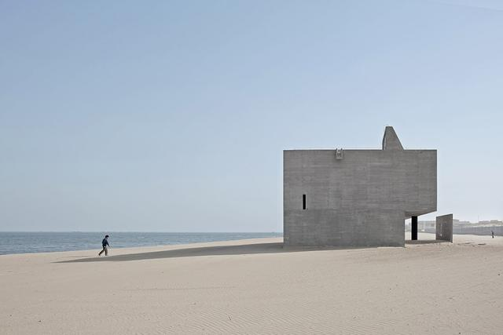
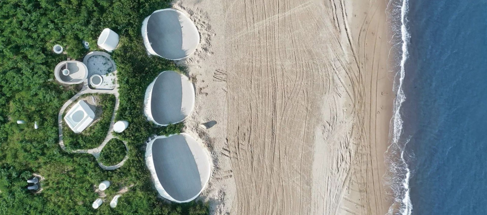
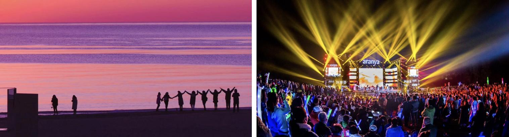
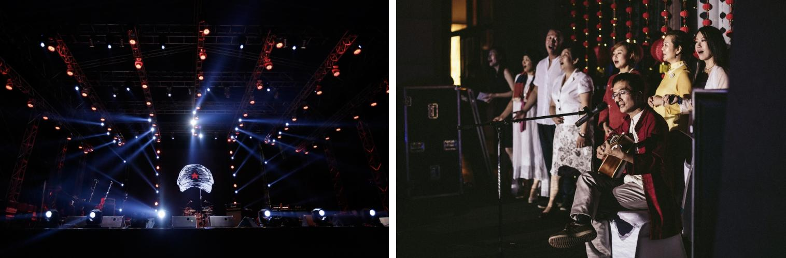

用概念地图表达海岸、沙丘、礼堂、图书馆、艺术社区和夜间活动的空间关系。

内容划分
范围从大到小，颜色从体系到证据。
不是先摆几个色块，而是先建立空间逻辑：全域主色调负责整体气质，区域色系负责场景差异，单色提取负责说明它为什么成立。
每个区域拆成主色系、辅色系、点缀色，形成可管理的色彩结构。
每个颜色对应真实照片、采样对象、归并方式和应用边界。
最终转译到建筑、景观、导视、活动视觉和负面清单。
1+1+3 框架
用公众号导则的骨架，重组阿那亚色彩体系。
原文的重点不是“选几种颜色”，而是建立科学、可管控、可落地的体系。阿那亚版本也应先定义依据、落实方向和操作重点，再进入色卡。
以城市色彩设计指南作为方法底盘
参照 GB/T 42648-2023 的思路，把自然本底、空间结构、色彩关系、管控对象和落地工具串成完整链条。
落实阿那亚海岸文旅社区的场所气质
不照搬行政新区导则，而是把海岸、沙丘、礼堂、图书馆、艺术、夜间消费这些真实业态转译成色彩规则。
色彩关系 · 人感知体验 · 实操落地
既控制建筑、景观、设施的协调关系，也关注游客行进中的视觉体验，并通过色卡、图则、负面清单保障可执行。
调研解构
阿那亚的色彩来自四类现实条件。
调研后不把阿那亚理解为工业城市，而是理解为海岸度假地产、文化艺术建筑群、夜间文旅消费街区和自然生态界面的复合体。
自然生态
渤海、沙滩、沙丘、滨海植被和海风日照决定了底色必须低彩度、轻明度、接近自然反光。
建筑样貌
礼堂的白、孤独图书馆的混凝土灰、沙丘美术馆的沙色与洞穴感，构成最强识别度。
产业形态
核心不是制造业，而是文旅度假、艺术展览、酒店民宿、社区商业、演出活动和夜间消费。
社区运营
音乐节、市集、剧场、阅读和社群活动带来少量高识别点缀色，但不应侵占日常建筑界面。
真实地图
阿那亚真实底图上的色彩分区
底图来自 OpenStreetMap，范围覆盖阿那亚·黄金海岸社区、小镇南北区、沙滩、海岸线和文创街区。色彩区域叠加在真实底图上，用来表达自然生态、建筑样貌和文旅业态之间的色彩关系。
01
海岸精神轴
礼堂、海岸线、孤独图书馆共同形成阿那亚最具识别度的白、灰、蓝关系。

© OpenStreetMap contributors · 色彩分区为研究叠加
区域色系
海岸精神轴
以礼堂、海面、孤独图书馆为核心，控制为高明度、低彩度、强留白的海岸精神界面。
单色提取
特征色
礼堂白
建筑主体 / 留白 / 导视底色
#ECE9DF
从阿那亚礼堂、海边步道和沙面反光中提取。它不是纯白，而是带有沙、雾和日照感的暖白。
- 观察对象白色礼堂、海边步道、强日照下的沙面反光。
- 初步采样避开高光纯白，选取阴影边缘和建筑中间调。
- 色彩归并降低纯白刺眼感，保留暖灰倾向，形成可大面积使用的礼堂白。
- 应用边界适合建筑主体、导视底色和界面留白；避免与高彩度商业色直接并置。
真实图片佐证
照片先于色名，场景先于色卡。
这些图片作为大类证据：白色礼堂、灰色图书馆、沙丘美术馆、日落海岸、夜间活动。正式发布前应替换为自有授权摄影。

礼堂白 / 晨海蓝
海岸精神轴的白、蓝、沙三层关系。

图书馆灰
清水混凝土与阴影形成低彩度灰。

沙丘米 / 海植绿
沙、海、植被共同构成自然底色。

落日橙
运营活动与日落带来温度。

夜游黑 / 活动红
夜间演艺形成深色与点缀色边界。
落地导则
从色彩地图走向管理工具。
这个网页后续可以扩展成在线色彩导则：区域图则、专用色卡、材料样本、负面清单和下载工具。
建筑系统
以礼堂白、图书馆灰、沙丘米为主体；慎用高彩度蓝、紫、红和大面积纯黑。
景观系统
以沙丘米、海植绿、阅读木组织铺装、座椅、栈道和公共家具。
导视系统
白/灰为底，晨海蓝作信息层级，落日橙只作少量提示色。
活动视觉
落日橙、夜游黑、深海蓝适合市集、音乐、戏剧和夜间传播。
三大系统
颜色要落到建筑、景观、设施三个系统。
对照原文的做法，阿那亚不能只展示区域色卡，还需要说明这些颜色分别管什么对象、怎么使用、哪里要控制面积。
建筑系统
控制礼堂、图书馆、酒店、住宅、商业立面和第五立面。
- 主色
- 礼堂白、图书馆灰、沙丘米、居住米。
- 辅色
- 阅读木、混凝土灰、低彩度海蓝。
- 点缀
- 仅允许入口、活动界面、临时装置小面积使用落日橙、剧场红。
景观系统
控制沙滩、步道、栈道、植被边界、座椅、铺装和公共开放空间。
- 主色
- 沙丘米、细沙米、湿沙褐米、海植绿。
- 辅色
- 防风林绿、栈道木、浅海蓝。
- 点缀
- 观景节点、导向节点可使用水线蓝或日照橙。
设施系统
控制导视、栏杆、灯具、垃圾桶、临时摊位、活动牌、服务设施。
- 主色
- 海风灰白、滩石灰、夜游黑。
- 辅色
- 晨海蓝、门廊木、松影绿。
- 点缀
- 提示、票务、夜间运营可使用电光蓝、落日橙，但必须控制比例。
负面清单
不仅规定能用什么，也要明确不能用什么。
原文强调负面清单和第五立面管控。阿那亚版本应尤其避免破坏海岸低彩度、自然材质和精神性留白。
落地工具包
把网页继续推进成可执行导则。
对齐公众号中的“图则、专用色卡、色标尺、质感色卡”，阿那亚版本应从展示网页升级成管理工具。
三类导则
建筑色彩导则、景观色彩导则、设施与活动视觉导则，分别服务设计、运营和审批。
17 张图则
按海岸精神轴、沙丘生态带、艺术社区、生活街区、夜间界面等区域拆成可查询图则。
阿那亚专用色卡 108
当前页面已有区域色系雏形，后续可扩展为 108 色编号：AY-C 建筑、AY-L 景观、AY-F 设施、AY-A 活动。
色标尺
用明度、彩度、冷暖、面积比例控制色差，避免同一色名在设计、施工、印刷中走样。
质感色卡
把清水混凝土、沙面、木材、金属、织物、涂料分开管理，因为同一颜色在不同材质上观感不同。
高明度白
沙丘米
混凝土灰
生态绿
海岸蓝
夜游黑
点缀橙
图片与资料来源
地图底图来自 OpenStreetMap contributors；图片素材来自 Unsplash、建筑档案、Metalocus 等公开页面，用于本地概念原型佐证；正式发布前应替换为自有授权摄影或完成版权授权。